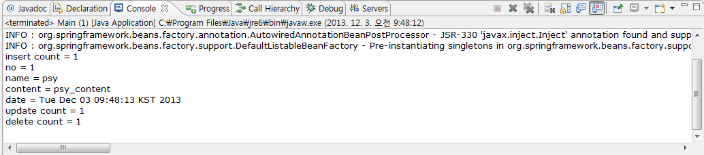

altibase_mybatis_spring 예제를 바탕으로 Spring-MyBatis-ALTIBASE와 연동하는 방법에 대해 좀 더 자세하게 설명한다.
단, IDE는 Eclipse를 사용한다.
DB 테이블 및 시퀀스 생성
DB에 다음의 테이블과 시퀀스를 생성한다.
create table users( user_no integer, user_name varchar(30), user_content varchar(200), reg_date date );
Spring 설치
Spring을 사용하려면 STS(STS, SpringSource Tools Suite)를 설치해야 한다.
STS란 이클립스에서 Spring으로 개발시에 편리하게 클립에서 스프링으로 개발할때 편리를 제공하는 플러그인으로 아래 목록 중 Eclipse의 Version에 맞게 설치 한다.
Maven 설치
- Maven은 Apache Software Foundation에서 개발되고 있는 소프트웨어 프로젝트 관리 툴이다.
Maven은 Project Object Model(POM)이라는 것에 기초를 두어 프로젝트의 빌드, 테스트, 도큐멘테이션 등 프로젝트 라이프사이클 전체를 관리할 수 있는 툴이며 Spring-Mybatis-Altibase 연동 테스트 소스도 Maven을 적용 하여 관리하게 되었다.
해당 part는 Maven의 설치 과정을 설명한다.
1. Maven 파일 다운로드 - http://maven.apache.org/download.html 에서 binary zip 파일을 다운 받는다.
2014년 10월 현재 최신버전은 apache-maven-3.2.8-bin.zip)
2. 메이븐 환경 설정 - 압축을 해제한 후에 윈도우 환경변수(바탕화면->내컴퓨터->속성->고급->환경변수)에서 MAVEN_HOME(c:\maven)을 사용자 변수에 추가하고,
PATH 설정에 maven binary path를 포함 시킨다.

- 윈도우에서 시작 -> 실행 -> cmd 입력 후 도스 창 뜨면 mvn –version 입력하여 버전이 뜨면 OK
3. eclipse에서 maven 다운로드
- eclipse의 Help->Eclipse Marketplace를 클릭하여 STS를 다운받는 것과 같이 maven을 다운로드 받는다.

4. 압축을 해제한 maven을 eclipse에 설정 한다.
- windows -> preference -> Maven -> Installatios 아래 browse클릭하여 “C:\maven\conf\settings.xml”경로를 잡아주고 Apply.
프로젝트 생성
Eclipse에 STS를 설치하면 Spring Template Project의 Spring 기반 프로젝트가 생성이 가능하다. 다음의 단계를 거쳐 프로젝트를 생성 한다.
1. 메뉴–File-New-Spring Template Project를 클릭하여 Spring MVC Project를 생성
2. Project name : 에 altibase_mybatis_spring, top-level package에 com.altibase.test 입력(Spring은 프로젝트 생성시 default 패키지 명을 필수로 입력해야 한다.)
3. Finish 버튼을 클릭
패키지 명명 규칙
부록에서 설명하고 있는 패키지 명은 기본적으로 com.altibase.test를 명명하여 사용하고 있는 데 이는 일반적으로 사용하는 패키지 분류 법칙을 가져와 적용한 것이며 각각의 성격은 다음과 같다.
- com : 첫번째 항목은 프로젝트를 이끄는 그룹의 성격을 결정하는 것으로 com은 company를 의미 한다. 만약 소규모 단체 등이라면 org(organization)를 사용할 것이다.
- altibase : 두번째 항목은 자사의 그룹 또는 사명을 정해주는 부분으로 보통 회사라면 회사명이, 특정 그룹이라면 그룹명이 들어간다. 현 문서는 ALTIBASE에서 작성 하였으므로 altibase로 명명 하였다.
- test : 세 번째 항목은 실제 이 프로젝트의 artifact 구조를 의미 한다. 현재 Samle은 DML의 일반적인 명령(Select/Insert/Delete/Update)이므로 test로 명명 하였다.
ApplicationContext 파일 작성
스프링 코드 작성에서 가장 먼저 해야 할 것은 AppilcationContext라고 불리는 스프링 빈 설정 파일을 작성 하는 것이다. 아래는 스프링 빈 설정 파일의 내역이다.
<?xml version="1.0" encoding="UTF-8"?>
<beans xmlns="http://www.springframework.org/schema/beans"
xmlns:xsi="http://www.w3.org/2001/XMLSchema-instance"
xmlns:context="http://www.springframework.org/schema/context"
xmlns:tx="http://www.springframework.org/schema/tx"
xmlns:p="http://www.springframework.org/schema/p"
xsi:schemaLocation="http://www.springframework.org/schema/beans http://www.springframework.org/schema/beans/spring-beans-3.0.xsd
http://www.springframework.org/schema/tx http://www.springframework.org/schema/tx/spring-tx-3.1.xsd
http://www.springframework.org/schema/context http://www.springframework.org/schema/context/spring-context-3.0.xsd">
<description>Example configuration to get you started.</description>
<!-- 지정된 패키지에서 빈을 탐색 -->
<context:component-scan base-package="com.altibase.test.service" />
<!-- Apache DBCP를 이용한 ALTIBASE DB 접속 방법 - Apache DBCP라 초기에 Session Pool을 붙이는 프로퍼티가 존재하며
물론 최초 연결시에 initialSize만큼 Session을 만들어 두는 것도 가능 하다. -->
<bean id="dataSource" class="org.apache.commons.dbcp.BasicDataSource" destroy-method="close">
<property name="driverClassName" value="Altibase.jdbc.driver.AltibaseDriver" />
<property name="url" value="jdbc:Altibase://192.168.1.62:21020/mydb" />
<property name="username" value="test" />
<property name="password" value="test" />
<property name="initialSize" value="10" />
<property name="minIdle" value="25" />
<property name="maxIdle" value="30" />
<property name="maxActive" value="100" />
<property name="validationQuery" value="select 1 from dual" />
<property name="testOnBorrow" value="false" />
</bean>
<!-- 트랜잭션 사용 -->
<bean id="txManager" class="org.springframework.jdbc.datasource.DataSourceTransactionManager">
<property name="dataSource" ref="dataSource" />
</bean>
<!-- 트랜잭션 annotation 정의 -->
<tx:annotation-driven transaction-manager="txManager"/>
<!-- SqlSessionFactory 정의 -->
<!-- typeAliasesPackage 속성에는 맵퍼 정의 파일(XML) 내의 SQL 문장에서 참조하는 도메인 클래스가 포함된 패키지를 지정 -->
<bean id="sqlSessionFactory" class="org.mybatis.spring.SqlSessionFactoryBean">
<property name="dataSource" ref="dataSource" />
<property name="typeAliasesPackage" value="com.altibase.test.domain" />
</bean>
<!-- 맵퍼 인터페이스와 맵퍼 정의 파일에 의해 생성된 맵퍼 클래스를 빈에 주입 할 수 있도록 함 -->
<bean class="org.mybatis.spring.mapper.MapperScannerConfigurer">
<property name="basePackage" value="com.altibase.test.persistence" />
</bean>
</beans>
Mapper 파일 작성
Users 테이블의 CRUD SQL 구문과 mapping되는 method들을 정의한 Mapper 파일을 작성한다.
pring의 방식을 따라야 하기 때문에 의존적 주입(Dependency Injection) 방식을 사용하게 된다.(UserMapper.xml, UserMapper.java)
Mapper는 com.altibase.test.persistence Package에 작성 하게 된다.
1. altibase_mybatis_spring 프로젝트 – src 디렉토리에서 마우스 오른쪽 버튼 클릭후 New – Package을 클릭하여 com.altibase.test.persistence 라는 신규 패키지를 생성한다.
2. 생성했던 신규 패키지(com.altibase.test.persistence)에 마우스 오른쪽 버튼 클릭 후 New – Interface를 클릭하여 UserMapper.java 파일을 생성한다
3. 생성한 Interface 파일의 내용을 다음과 같이 작성 한다.
package com.altibase.test.persistence;
import java.util.List;
import com.altibase.test.domain.UserVo;
public interface UserMapper {
public List<UserVo> getAllUser();
public UserVo getUserByNo(int user_no);
public Integer insertUserData(UserVo userVo);
public Integer deleteUserByNo(int user_no);
public Integer updateUserByNo(UserVo userVo);
}
4. 생성된 신규 패키지(com.altibase.test.persistence)에서 마우스 오른쪽 버튼 클릭 후 New – File을 클릭하여 File name: 에 UserMapper.xml을 작성한다.
5. 다음의 내용을 UserMapper.xml에 작성 한다.
<?xml version="1.0" encoding="UTF-8"?>
<!DOCTYPE mapper PUBLIC "-//mybatis.org//DTD Mapper 3.0//EN"
"http://mybatis.org/dtd/mybatis-3-mapper.dtd">
<mapper namespace="com.altibase.test.persistence.UserMapper">
<select id="getAllUser" parameterType="Integer" resultType="UserVo">
SELECT user_no as userNo,
user_name as userName,
user_content as userContent,
reg_date as regDate
FROM users
WHERE user_no = #{userNo}
</select>
<select id="getUserByNo" resultType="UserVo">
SELECT user_no as userNo,
user_name as userName,
user_content as userContent,
reg_date as regDate
FROM users
</select>
<insert id="insertUserData" parameterType="UserVo">
insert into
users(user_no, user_name, user_content, reg_date)
values(#{userNo}, #{userName}, #{userContent}, #{regDate})
</insert>
<update id="updateUserByNo" parameterType="UserVo">
update users
set user_name = #{userName},
user_content = #{userContent},
reg_date = #{regDate}
where user_no = #{userNo}
</update>
<delete id="deleteUserByNo" parameterType="Integer">
delete from users
where user_no = #{userNo}
</delete>
</mapper>
해당 방식은 Spring만의 방식으로 의존적 주입(Dependency Injection)의 방식으로 처리 하고 있다.
Application에서는 인터페이스에 정의되어 있는 메소드를 통하여 SQL 문을 처리한다.
Dependency Injection
Dependency Injection(줄여서 DI)는 직역하면 의존적 주입 이다.
Dependency Injection이란 Gof의 디자인 패턴에 있는 기법으로, 실제 사용자가 사용하게 될 메소드를 인터페이스로 지정하여 실제 로직과 분리하여 처리하는 기법이다.
이렇게 처리하게 되면 사용자는 인터페이스의 메소드만 이용 하더라도 구현부는 나중에 주입을 통해 해결하므로 획기적인 분업과 동시에 구현 클래스를 쉽게 교체할 수 있다는 장점을 얻게 된다.
Application 작성
1. users 테이블에 대한 VO(Value Object)객체인 UserVO 클래스(UserVo.java)를 작성한다.
1-1. altibase_mybatis_spring 프로젝트의 src/main/java 디렉토리에서 마우스 오른쪽 버튼 클릭 후 New – Class를 클릭 한다.
1-2. Package:에 com.altibase.test.domain을 입력하고 Name: 에 UserVo를 입력한다.
1-3. 다음의 내용을 UserVo.java 파일에 작성 한다.
package com.altibase.test.domain;
import java.io.Serializable;
import java.util.Date;
@SuppressWarnings("serial")
public class UserVo implements Serializable {
private Integer userNo;
private String userName;
private String userContent;
private Date regDate;
public UserVo() {
}
public UserVo(Integer userNo, String userName, String userContent, Date regDate) {
this.userNo = userNo;
this.userName = userName;
this.userContent = userContent;
this.regDate = regDate;
}
public Integer getUserNo() {
return userNo;
}
public void setUserNo(Integer userNo) {
this.userNo = userNo;
}
public String getUserName() {
return userName;
}
public void setUserName(String userName) {
this.userName = userName;
}
public String getUserContent() {
return userContent;
}
public void setUserContent(String userContent) {
this.userContent = userContent;
}
public Date getRegDate() {
return regDate;
}
public void setRegDate(Date regDate) {
this.regDate = regDate;
}
@Override
public String toString() {
return "User [no=" + userNo + ", name=" + userName + ", content=" + userContent
+ ", date=" + regDate + "]";
}
}
2. 실제 쿼리를 수행하는 인터페이스 및 주입 클래스 파일을 작성 한다.
2-1. altibase_mybatis_spring 프로젝트의 src/main/java 디렉토리에서 마우스 오른쪽 버튼 클릭 후 New – Interface를 클릭 한다.
2-2. Package:에 com.altibase.test.service를 입력하고 Name: 에 UserService를 입력한다.
2-3. 다음의 내용을 UserService.java 파일에 작성 한다.
package com.altibase.test.service;
import java.util.List;
import com.altibase.test.domain.UserVo;
public interface UserService {
public List<UserVo> getAllUser();
public UserVo getUserByNo(int user_no);
public Integer insertUserData(UserVo userVo);
public Integer deleteUserByNo(int user_no);
public Integer updateUserByNo(UserVo userVo);
}
2-4. 생성했던 신규 패키지(com.altibase.test.service)에 마우스 오른쪽 버튼 클릭 후 New – Class를 클릭하여 실제 로직을 처리하는 UserServiceImpl.java Class 파일을 생성 한다.
2-5. 다음의 내용을 UserMapperImple.java 파일에 작성 한다
package com.altibase.test.service;
import java.util.List;
import org.springframework.beans.factory.annotation.Autowired;
import org.springframework.stereotype.Service;
import com.altibase.test.domain.UserVo;
import com.altibase.test.persistence.UserMapper;
@Service("userService")
public class UserServiceImpl implements UserService {
@Autowired
private UserMapper userMapper;
private Integer res_count;
public List<UserVo> getAllUser() {
List<UserVo> userVos = userMapper.getAllUser();
return userVos;
}
public UserVo getUserByNo(int user_no) {
UserVo userVo = userMapper.getUserByNo(user_no);
return userVo;
}
public Integer insertUserData(UserVo userVo) {
res_count = userMapper.insertUserData(userVo);
return res_count;
}
public Integer deleteUserByNo(int user_no) {
res_count = userMapper.deleteUserByNo(user_no);
return res_count;
}
public Integer updateUserByNo(UserVo userVo) {
res_count = userMapper.updateUserByNo(userVo);
return res_count;
}
}
3. 실제 프로그램이 수행되는 Main 클래스를 Main.java 파일에 작성 한다.
package com.altibase.test;
import java.util.Calendar;
import org.springframework.context.ApplicationContext;
import org.springframework.context.support.ClassPathXmlApplicationContext;
import com.altibase.test.domain.UserVo;
import com.altibase.test.service.UserService;
public class Main {
private static UserService userService;
public static void main(String[] args) {
// TODO Auto-generated method stub
int res_count = 0;
ApplicationContext applicationContext = new ClassPathXmlApplicationContext("META-INF/spring/ApplicationContext.xml");
userService = (UserService)applicationContext.getBean("userService");
UserVo userVo = new UserVo();
// Insert 샘플
userVo.setUserNo(1);
userVo.setUserName("psy");
userVo.setUserContent("psy_content");
userVo.setRegDate(Calendar.getInstance().getTime());
res_count = userService.insertUserData(userVo);
System.out.println("insert count = " + res_count);
// Select 샘플
userVo = userService.getUserByNo(1);
System.out.println("no = " + userVo.getUserNo());
System.out.println("name = " + userVo.getUserName());
System.out.println("content = " + userVo.getUserContent());
System.out.println("date = " + userVo.getRegDate());
// Update 샘플
userVo.setUserName("updated_psy");
userVo.setUserContent("updated_psy_content");
res_count = userService.updateUserByNo(userVo);
System.out.println("update count = " + res_count);
// Delete 샘플
res_count = userService.deleteUserByNo(userVo.getUserNo());
System.out.println("delete count = " + res_count);
}
}
관련 JAR 파일 추가
Jar를 추가하는 방법은 두 가지 이다.
- Maven에 의한 라이브러리 추가
- 기존 방식대로(properties-Java Build Path의 Add External JARS)의 라이브러리 추가
샘플 소스는 Maven에 의한 라이브러리 관리 방법을 선택하여 작성 되었으며, 두 번째 방법인 기존 방식은 위에서도 설명한 바 있어 본 장에선 Maven에 의한 라이브러리 관리 방법을 설명 한다.
Maven을 설치 하여 Spring Template Project를 생성하면 pom.xml이라는 파일이 생성 되는데, 해당 파일이 라이브러리를 관리해 주는 파일 이다.
pom.xml 파일에서 library를 추가하는 방법은 두 가지이다.
- pom.xml 탭에서 태그를 직접 입력 하여 library 추가
- Dependencies 탭에서 Add 버튼으로 library 추가
태그를 직접 입력 하는 방법은, 위의 탭중 pom.xml 탭을 눌러 나타나는 xml 파일에 직접 입력하여 library를 추가 하는 방법이며 아래 화면과 같이 추가 한다.
(테스트에 사용한 library는 Apache common dbcp library 이다.)
추가한 후에 xml 파일을 저장하면 Maven Dependecies에 Library가 추가된 것을 확인할 수 있다.
Dependencies 탭에서 Add 버튼으로 library 추가하는 방법은 다음과 같은 단계를 거쳐 추가가 가능하다.
1) pom.xml 파일에서 dependencies-Add 버튼을 클릭하면 다음의 창이 뜨게 된다.
해당 창의 Enter groupId, artifactId or sha1 prefix or pattern  : 칸에 추가하고 싶은 library의 이름을 입력하게 되면 아래와 같이 입력한 이름에 대한 라이브러리를 보여 준다.
: 칸에 추가하고 싶은 library의 이름을 입력하게 되면 아래와 같이 입력한 이름에 대한 라이브러리를 보여 준다.
2) Search Results에 나타난 Library를 클릭하면 해당 Library에 대한 버전이 나타나게 되고 필요한 버전을 클릭한 후 OK 버튼을 클릭하면 해당 Library가 추가 된다.
라이브러리가 추가된 것을 확인할 수 있다.
파일을 저장하면 변경된 내역이 반영되면서 Library가 추가 된다.
마지막에 Library가 추가된 것을 보면 commons-dbcp말고 commons-pool도 같이 추가가 되었는데, dependencies 탭을 통해 추가하게 되면 이와 같이 관련된 Library도 같이 추가해 준다.
Application 실행
altibase_mybatis_spring 프로젝트를 실행한다.
altibase_mybatis_spring 프로젝트를 클릭한 후 메뉴에서 Run을 실행하거나 com.altibase.test 패키지의 Main.java 클래스를 더블 클릭하여 파일을 연 후에 Run을 실행 한다.

{kind=link}
{kind=link}
{kind=link}
{kind=link}
{kind=link}
{kind=link}
{kind=link}
{kind=link}
{kind=link}
{kind=link}
{kind=link}
{kind=link}
{kind=link}
{kind=link}
{kind=link}
{kind=link}
{kind=link}
{kind=link}
{kind=link}
{kind=link}
{kind=link}
{kind=link}